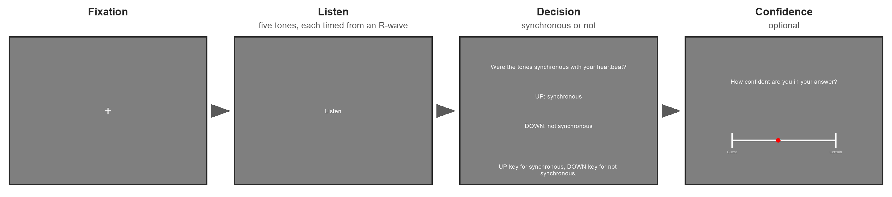

Heartbeat Synchrony Discrimination task#
Beta
The Heartbeat Synchrony Discrimination task (HSD) is close to feature complete and still being validated. Its stopping rule is provisional. Read the method and rationale for the measurement approach and the validation page for simulation results and hardware checks.
The HSD is an adaptive version of the heartbeat detection task of Brener, Liu and Ring [Brener et al., 1993]. Participants judge whether tones presented at different delays after the R-wave feel synchronous with their heartbeat.
The model estimates the location of the perceived heartbeat (mu, in milliseconds after the R-wave) and the width of the response pattern around it (sigma). Sensitivity is described by the increase in “synchronous” responses near that location compared with delays farther away. Participants also rate their confidence after each judgement.
What a trial looks like#
Each trial presents five tones at a selected delay after successive R-waves detected in the ECG. The participant has 5 s to judge whether the tones felt synchronous with their heartbeat, pressing UP for yes or DOWN for no.
They then rate their confidence in ten steps from “Guess” to “Certain”, using LEFT and RIGHT to select a rating and DOWN to confirm. If no decision is given in time, the task displays “Too late” and the trial does not update the estimate.

One HSD trial, from screenshots of the running task.#
After each answer the next delay is chosen where it is most informative about mu, with one trial in ten drawn at random. The delay is set on one of two axes, chosen per session with axis. On the absolute axis, the default, candidates run from 80 to 600 ms after the R-wave in 20 ms steps; none below the 130 ms floor is played, so the shortest delay is 140 ms. On the phase axis the delay is a fraction of the anticipated interbeat interval, from 0.10 to 0.75 in steps of 0.025, so it scales with heart rate.
The session stops once the 95 percent credible interval of mu is no wider than 100 ms (0.17 of the period on the phase axis), after at least 15 valid updates, and never later than 60 trials. The hardware demonstration reached 60 trials in 7 minutes. The stopping rule is provisional; the validation page distinguishes the earlier simulation results from the current rule. A session starts with three instruction screens and three practice trials that do not update the estimate, and there is a break every 20 trials.
The psychometric model#
The model describes how the probability of a “synchronous” response changes with tone delay \(d\). It uses a Gaussian response envelope:
Parameter |
Interpretation |
|---|---|
\(\mu\) ( |
The delay at which “synchronous” responses are most likely |
\(\sigma\) ( |
The width of the response envelope; smaller values describe a narrower range of delays judged synchronous |
\(\mathrm{floor}\) ( |
The baseline probability of a “synchronous” response far from \(\mu\) |
\(\mathrm{peak}\) ( |
The probability of a “synchronous” response at \(\mu\) |
On the absolute axis, \(d\), \(\mu\), and \(\sigma\) are measured in milliseconds. On the phase axis, they are expressed as fractions of the cardiac period. The model constrains \(0 \leq \mathrm{floor} \leq \mathrm{peak} \leq 1\), with \(\sigma > 0\).
The difference \(\mathrm{peak} - \mathrm{floor}\) describes the strength of the response pattern. When the two are equal, responses do not depend on delay and cannot identify a preferred heartbeat timing. The width \(\sigma\) describes the observed judgements; timing jitter in the recording and audio system can broaden it.
The task updates the parameter estimates after each valid response and uses them to select the next delay. See the model specification for the parameter grids, priors, and conditional estimates used by the stopping rule.
What you need#
An ECG streamed over Lab Streaming Layer. Every tone is timed from an R-wave, so a pulse oximeter cannot drive the task. Install the dependency with
pip install cardioception-toolbox[lsl]. For a PLUX hub, Recording devices covers the bridge, the channel label and the electrodes.A sound card. Tones are played through PsychPortAudio, PsychoPy’s psychtoolbox audio backend.
LabRecorder. The task keeps no copy of the ECG, so record the ECG stream and the
HSDmarker stream: the XDF file is the session’s recording.The same speakers or headphones in every session, because the latency bias below includes the delay of the audio output.
Running it#
Start the bridge, or the device’s own streaming program, then run wrappers/hsd_lsl.py or your copy of it:
python hsd_lsl.py
A dialog asks for:
Field |
Default |
What it sets |
|---|---|---|
participant |
|
The participant identifier |
session |
|
The session identifier |
LSL stream |
|
The name of the ECG stream |
Channel |
none |
The label of the ECG channel. It must be given: the label is not the same on every hub, and the task does not start without it. A label the stream does not have stops the task with an error that lists the stream’s channels |
Axis |
|
|
Device |
|
The response device, keyboard only so far |
Language |
|
The instructions, English only so far |
When the dialog closes, the task opens the HSD marker stream. In LabRecorder, update the stream list, select the ECG stream and HSD, and start recording while the first instruction screen is up. The wrapper runs at most 60 trials (nTrials=60).
To run the task from a Python script:
from cardioception.devices import LSLRecorder
from cardioception.HSD.parameters import getParameters
from cardioception.HSD.task import run
recorder = LSLRecorder(name="PLUX", channel="ECG2", signal_type="ecg", marker_stream="HSD")
parameters = getParameters(
participant="Subject_01", session="HSD", setup="behavioral",
axis="absolute", nTrials=60, recorder=recorder)
try:
run(parameters, confidenceRating=True, runTutorial=True)
finally:
parameters["tonePlayer"].close()
recorder.close()
With setup="behavioral" the beats are found online by cardioception.devices.beat_source.LSLBeatSource and the tones scheduled by cardioception.devices.tone_player.TonePlayer, both shared with the Phase Adjustment Task. There is no replay setup: setup="test" needs a beat_source= and a tone_player= of your own, which is how the headless tests run.
Escape ends the session and saves the files. The task also saves and stops after three consecutive trials with no tones delivered, indicating a problem with beat detection or tone delivery.
The main settings#
getParameters takes axis, nTrials (which replaces maxTrials and may not be below minTrials), nBreaking (20), language, resultPath, overwrite and seed. Everything about the stimulus and the stopping rule is on a TaskConfig, passed as config=:
from cardioception.HSD.config import TaskConfig
config = TaskConfig(ciWidth=80.0, minTrials=20, maxTrials=90)
parameters = getParameters(..., config=config)
Field |
Default |
Meaning |
|---|---|---|
|
5, 3 |
Tones per trial, and the fewest a trial must deliver to update the estimate |
|
80 to 600 by 20 ms |
The candidate delays on the absolute axis |
|
0.10 to 0.75 by 0.025 |
The candidates on the phase axis, as fractions of the period |
|
0.13 s |
The floor: no shorter physical delay is played |
|
0.75, 0.10 |
The ceiling, as a fraction of the interbeat interval, and the margin taken off it |
|
0.05 s |
The delay the recordings cannot see, subtracted from every tone’s target |
|
0.05 s |
How far ahead a tone is scheduled |
|
0.1 |
The share of trials whose delay is drawn at random |
|
15, 60 |
Bounds on the session length |
|
100 ms, 0.17 |
The credible interval width at which to stop |
|
5, 0.5, 5 s |
Time limits on the answer and the rating |
The floor and the ceiling matter most. The ECG transport and the speaker add a roughly constant 30 to 70 ms that no recording can see, so every tone is scheduled latencyBias early and no delay below minDelay is played. Set minDelay from the lag your setup shows; the timing measurements explain the default correction, and the simulation results show how the floor affects accuracy. The longest delay on a trial is limited to 0.675 of the current interbeat interval (0.75 less the 10 percent margin), so that a tone is not heard as belonging to the next beat; 600 ms is allowed only when the period is over 0.89 s. A beat whose period has shortened past the ceiling is skipped and a later one used, up to twice nTones beats per trial.
What it saves#
A session writes to data/sub-<participant>/ses-<session>/run-<YYYYMMDD-HHMMSS>/, under resultPath when it is given. Every clock time is on one clock, pylsl.local_clock, shared by the beat source, the tone player and the marker stream.
File |
Contents |
|---|---|
|
One row per trial: requested and realized delay, tones delivered and skipped, decision, confidence, the posterior after the trial and the clock times |
|
One row per beat a tone was tried on: R-wave time, target, onset and realized delay |
|
Every beat detected during the session, filed under the trial whose markers carry it |
|
The posterior after each trial, trials by grid, in single precision |
|
The engine’s state and trial history, enough to re-analyze the session |
|
The task, axis, configuration, clock and devices, written before the first trial |
|
The rows written after every trial, the parameters at the end, and the session’s log |
The run directory holds no ECG: that is in the LabRecorder file. The task’s triggers go to the HSD marker stream as JSON, one string per marker, with a marker for every beat, every tone scheduled, played or skipped, and every decision and rating.
Reading the results#
Practice trials are excluded from *_final.txt. The main columns are:
Column |
Meaning |
|---|---|
|
The delay the engine asked for: ms after the R-wave on the absolute axis, a fraction of the interbeat interval on the phase axis |
|
The mean delay of the trial’s tones as the tone player reports them, with the latency bias added back. This is the stimulus to analyze. The true delay of each tone comes from the LabRecorder file |
|
The same without the latency bias, so 50 ms below |
|
|
|
The rating on the scale shown, 1 to 10 by default. |
|
Whether the trial updated the posterior, and if not why: |
|
Tones played and refused, a train that could not be delivered, and a delay drawn at random |
|
Where the heartbeat is felt: the posterior mean of |
|
How sharply the sensation is timed. It is recovered less well than |
|
The rate of “synchronous” answers away from the sensation and at it. Their difference is the sensitivity: someone who cannot feel their heartbeat answers at the same rate at every delay, and the difference is near zero. The floor alone is a bias towards answering “synchronous” |
|
True when the |
|
The Bayes factor, and the posterior probability, for an envelope that rises by more than 0.2 across the delays presented so far |
DetectionBF is a sanity check, never a classification. The rise is measured across the delays presented, so a bump outside them, or one too wide to change across them, counts as flat. The prior puts about half its mass on a rise (0.47 over 140 to 500 ms), so read DetectionEvidence against that, or read the Bayes factor, which removes the prior.
As for the HRD, the online posterior is a monitoring aid, not an analysis. No offline model has been published yet. Fit any later model to the trial history, RealizedCorrected against Decision on the rows with Used true, which *_engine.json also holds.
Where to go next#
HSD method and rationale: the model, adaptive delay selection, interpretation, and stopping rule.
HSD validation and technical details: simulation results, the hardware demonstration, and remaining validation work.
Recording devices: the PLUX bridge and LabRecorder.
API: every field of
TaskConfigand every argument ofgetParameters.